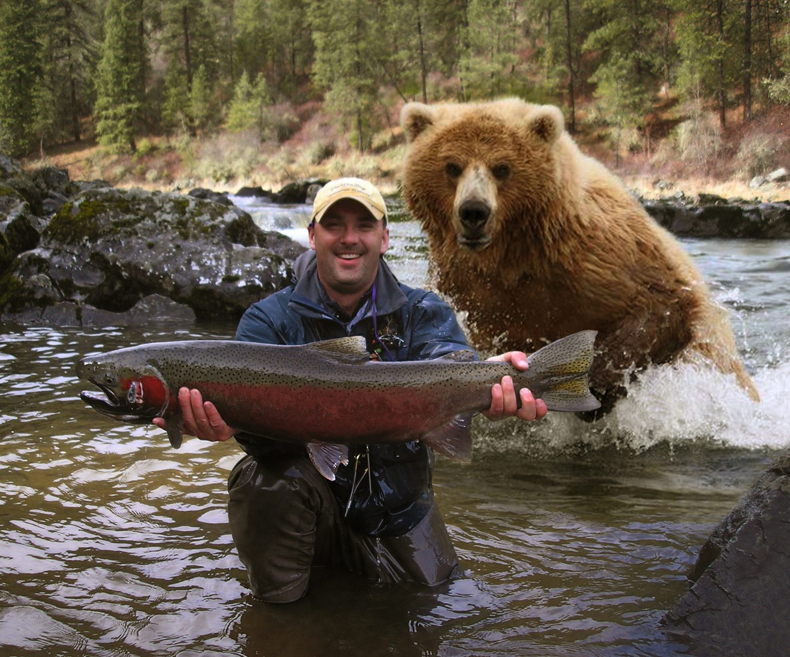

Spring Activities
Fishing
 Many Montanas view spring as a time to get out and wet some line trying to catch that big fish they want to hang over their fireplace and stare at in the depths of winter.
Picnics
Picnics are a great way to spend some time outdoors in the spring. The long winters we experience often times have many Montanas begging to get out side and enjoy some fresh air.
Hiking
Montana is full of hiking oppurtunites and wildlife viewing oppurtunites. The spring time is a great time to get out and stretch your legs and get one last glipse at the fleeting winter that has engulfed the entire state for 3-4 months straight.